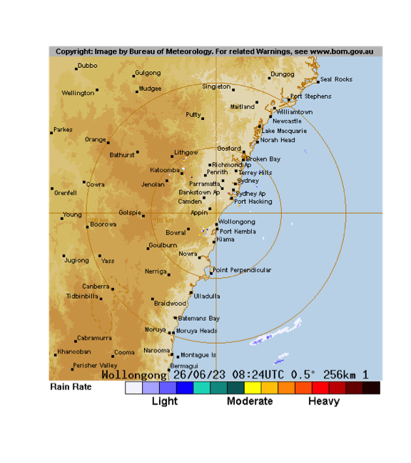

vignettes/weatherOz.Rmd
weatherOz.Rmd{weatherOz} provides automated downloading, parsing, and formatting
of weather data for Australia through API endpoints provided by the
Department of Primary Industries and Regional Development (DPIRD) of
Western Australia, and by the Science and Technology Division of the
Queensland Government’s Department of Environment and Science (DES). As
well as Australian Government Bureau of Meteorology (‘BOM’) précis and
coastal forecasts, agriculture bulletin data, and downloading and
importing radar and satellite imagery files. DPIRD weather data are
accessed through public APIs provided by DPIRD, https://www.agric.wa.gov.au/weather-api-20, providing
access to weather station data from DPIRD’s own weather station network.
Australia-wide weather data are based on data from the Australian Bureau
of Meteorology (BOM) data and accessed through SILO (Scientific
Information for Land Owners) (Jeffery et al., 2001). BOM also serves
several types of data data as XML, JSON and SHTML files. This package
fetches these files, parses them and return a data frame. Satellite and
radar imagery files are also made available to the public via anonymous
FTP. {weatherOz} provides functionality to query, fetch and create
terra::SpatRaster() objects of the GeoTIFF imagery or a
magick object of radar image.png files.
Several functions are provided by {weatherOz} to retrieve Australian
Bureau of Meteorology (BOM) data. A family of functions retrieve weather
data and return data frames; * get_precis_forecast(), which
retrieves the précis (short) forecast; * get_ag_bulletin(),
which retrieves the agriculture bulletin; *
get_coastal_forecast(), which fetches coastal waters
forecasts for each state; and A second family of functions retrieve
information pertaining to satellite and radar imagery,
get_available_imagery() and the imagery itself,
_imagery() for satellite, and
get_available_radar() and get_radar_imagery()
for radar images. The last group functions provides internal
functionality for {weatherOz} itself;
update_forecast_towns(), which updates an internal database
of forecast locations distributed with the package,
update_ag_station_locations(), which updates an internal
database of the stations reporting ag bulletins and
find_forecast_towns() and find_nearby_stations()` which
returns either the closest forecast locations or the nearest weather
stations with an ag bulletin to a given point in Australia.
This function only takes one argument, state. The
state parameter allows the user to select the forecast for
just one state or a national forecast. States or territories are
specified using the official postal codes or full name with fuzzy
matching performed via agrep().
ACT - Australian Capital Territory
NSW - New South Wales
NT - Northern Territory
QLD - Queensland
SA - South Australia
TAS - Tasmania
VIC - Victoria
WA - Western Australia
AUS - Australia, returns national forecast including all states, NT and ACT.
The function, get_precis_forecast(), will return a data
frame of the weather forecast for the daily forecast for selected towns.
See Appendix 1 for a full description of the fields and values.
Following is an example fetching the forecast for Queensland.
(QLD_forecast <- get_precis_forecast(state = "QLD"))
#> ----------- Australian Bureau of Meteorology (BOM) Précis Forecast. -
#> The HTML version of Short Form (Précis) Forecast for
#> QLD can be found at:
#> <http://www.bom.gov.au/qld/forecasts/state.shtml>
#> Please note information at the page
#> <http://www.bom.gov.au/catalogue/data-feeds.shtml#precis>
#> --------------------------------------------------------------------------------
#> data.table [904, 19]
#> index fct 0 1 2 3 4 5
#> product_id chr IDQ11295 IDQ11295 IDQ1129~
#> state chr QLD QLD QLD QLD QLD QLD
#> town chr Brisbane Brisbane Brisban~
#> aac chr QLD_PT001 QLD_PT001 QLD_P~
#> lat dbl -27.4808 -27.4808 -27.480~
#> lon dbl 153.0389 153.0389 153.038~
#> elev dbl 8.1 8.1 8.1 8.1 8.1 8.1
#> start_time_local dttm 2023-06-26 17:00:00 2023-~
#> end_time_local dttm 2023-06-27 2023-06-28 202~
#> utc_offset fct 10:00 10:00 10:00 10:00 1~
#> start_time_utc dttm 2023-06-26 07:00:00 2023-~
#> end_time_utc dttm 2023-06-26 14:00:00 2023-~
#> minimum_temperature dbl NA 9 10 15 9 8
#> maximum_temperature dbl NA 22 24 23 22 21
#> lower_precipitation_limit dbl NA NA NA NA NA NA
#> upper_precipitation_limit dbl NA NA NA NA NA NA
#> precis chr Clear. Sunny. Partly clou~
#> probability_of_precipitation dbl 0 0 0 5 0 0get_ag_bulletin() only takes one argument,
state. The state parameter allows the user to
select the bulletin for just one state or a national forecast. States or
territories are specified using the official postal codes or full name
with fuzzy matching performed via agrep().
NSW - New South Wales
NT - Northern Territory
QLD - Queensland
SA - South Australia
TAS - Tasmania
VIC - Victoria
WA - Western Australia
AUS - Australia, returns bulletin for all states and NT.
The function, get_ag_bulletin(), will return a data
frame of the agriculture bulletin for selected stations. See Appendix 3
for a full list and description of the fields and values.
Following is an example fetching the ag bulletin for Queensland.
(QLD_bulletin <- get_ag_bulletin(state = "QLD"))
#> ----------- Australian Bureau of Meteorology (BOM) Ag Bulletin. -----------
#> Please note information at the foot of:
#> <http://www.bom.gov.au/cgi-bin/wrap_fwo.pl?IDQ60604.html>
#> the HTML version of Agricultural Observations Bulletin for
#> QLD. Also see:
#> <http://www.bom.gov.au/catalogue/observations/about-agricultural.shtml>.
#> ----------------------------------------------------------------------------
#> data.table [29, 21]
#> product_id fct IDQ60604 IDQ60604 IDQ60604 IDQ60604 IDQ~
#> state chr QLD QLD QLD QLD QLD QLD
#> station chr Ayr Birdsville Brisbane Airport Bundabe~
#> site fct 33002 38026 40842 39128 31011 44021
#> obs_time_local dttm 2023-06-26 09:00:00 2023-06-26 09:00:00~
#> obs_time_utc dttm 2023-06-25 23:00:00 2023-06-25 23:00:00~
#> time_zone chr EST EST EST EST EST EST
#> r dbl 0 0 0 0 0 0
#> tn dbl 16.5 11.4 13.4 15.9 20 6.5
#> tx dbl 28.1 21.9 23.2 26.8 29.1 24.8
#> twd dbl NA 6.8 9.8 0.1 4.3 7.2
#> ev dbl NA NA 3.8 NA NA NA
#> tg dbl NA NA 7.3 NA NA NA
#> sn dbl NA NA 9.9 NA NA NA
#> solr dbl 16.7 14.1 13.9 14.8 16.2 14.4
#> t5 dbl NA NA NA 19.4 NA NA
#> t10 dbl NA NA NA 19.8 NA NA
#> t20 dbl NA NA NA 20.5 NA NA
#> t50 dbl NA NA NA 20 NA NA
#> t1m dbl NA NA NA NA NA NA
#> wr dbl NA NA 148 NA NA NAThis function only takes one argument, state. The
state parameter allows the user to select the forecast for
just one state or a national forecast. States or territories are
specified using the official postal codes or full name with fuzzy
matching performed via agrep()
ACT - Australian Capital Territory
NSW - New South Wales
NT - Northern Territory
QLD - Queensland
SA - South Australia
TAS - Tasmania
VIC - Victoria
WA - Western Australia
AUS - Australia, returns national forecast including all states, NT and ACT.
The function, get_coastal_forecast(), will return a data
frame of the coastal waters forecast for marine zones in each state. See
Appendix 6 for a full description of the fields and values.
Following is an example fetching the forecast for Queensland.
(QLD_coastal_forecast <- get_coastal_forecast(state = "QLD"))
#> ------- Australian Bureau of Meteorology (BOM) Coastal Waters Forecast. -------
#> Please note information at the foot of:
#> <http://www.bom.gov.au/cgi-bin/wrap_fwo.pl?IDQ11290.html>
#> the HTML version of Coastal Waters Forecast for
#> QLD.
#> Also see
#> <http://www.bom.gov.au/catalogue/observations/about-coastal-observations.shtml>.
#> --------------------------------------------------------------------------------
#> data.table [64, 22]
#> index fct NA NA NA NA 0 1
#> product_id chr IDQ11290 IDQ11290 IDQ11290 ID~
#> type chr NA NA NA NA NA NA
#> state_code chr QLD QLD QLD QLD QLD QLD
#> dist_name chr Queensland Queensland Gulf of~
#> pt_1_name chr NA NA NA NA NA NA
#> pt_2_name chr NA NA NA NA NA NA
#> aac chr QLD_FA001 QLD_FA002 QLD_FA003~
#> start_time_local dttm 2023-06-26 15:50:20 2023-06-2~
#> end_time_local dttm 2023-06-26 15:50:20 2023-06-2~
#> utc_offset fct 10:00 10:00 10:00 10:00 10:00~
#> start_time_utc dttm 2023-06-26 15:50:20 2023-06-2~
#> end_time_utc dttm 2023-06-26 15:50:20 2023-06-2~
#> forecast_seas chr NA NA NA NA Below 1 metre, in~
#> forecast_weather chr NA NA NA NA Clear. Partly clo~
#> forecast_winds chr NA NA NA NA Northeast to sout~
#> forecast_swell1 chr NA NA NA NA NA Below 0.5 metr~
#> forecast_swell2 chr NA NA NA NA NA NA
#> forecast_caution chr NA NA NA NA NA NA
#> marine_forecast chr NA NA NA NA NA NA
#> tropical_system_location lgl NA NA NA NA NA NA
#> forecast_waves lgl NA NA NA NA NA NAsweep_for_stations() only takes one argument,
latlon, a length-2 numeric vector. By default, this is
Canberra (approximately).
This function will search for weather stations and return a data
frame of all weather stations (in this package) sorted by distance from
latlon, ascending. The fields in the data frame are:
name - station name
lat - latitude (decimal degrees)
lon - longitude (decimal degrees)
distance - distance from provided
latlon value (kilometres).
Following is an example sweeping for stations starting with Canberra. Note that this code chunk is not executed due to the need of an API key. We get the station distances in this function from the DPIRD API so you will need to supply your own API key.
# Show only the first ten stations in the list
find_nearby_stations(
latitude = -35.4,
longitude = 149.2,
distance_km = 10,
api_key = YOUR_API_KEY
)find_forecast_towns() only takes one argument,
latlon, a length-2 numeric vector. By default, this is
Canberra (approximately).
This function will search for weather stations and return a data
frame of all weather stations (in this package) sorted by distance from
latlon, ascending. The fields in the data frame are:
name - forecast town
lat - latitude (decimal degrees)
lon - longitude (decimal degrees)
distance - distance from provided
latlon value (kilometres).
Following is an example sweeping for forecast towns starting with Canberra. As this function is executed locally using great circle distances, it doesn’t need an API key.
# Show only the first ten towns in the list
head(find_forecast_towns(latitude = -35.3, longitude = 149.2, distance_km = 10))
#> data.table [6, 6]
#> aac chr NSW_PT027 NSW_PT235 NSW_PT329 NSW_PT281 NSW_PT~
#> town chr Canberra Queanbeyan Portable RFSACT03 Woden Va~
#> lon dbl 149.2003 149.2346 149.3162 149.08454 149.06769~
#> lat dbl -35.3088 -35.3485 -35.3111 -35.34844 -35.23538~
#> elev dbl 577.6 612 719 610 570 621.5
#> distance dbl 0.978709 6.238937 10.615318 11.77715 13.995264~{weatherOz} uses internal databases of station location data from BOM to provide location and other metadata, e.g. elevation, station names, WMO codes, etc. to make the process of querying for weather data faster. These databases are created and packaged with {weatherOz} for distribution and are updated with new releases. Users have the option of updating these databases after installing {weatherOz}. While this option gives the users the ability to keep the databases up-to-date and gives {weatherOz}’s authors flexibility in maintaining it, this also means that reproducibility may be affected since the same version of {weatherOz} may have different databases on different machines. If reproducibility is necessary, care should be taken to ensure that the version of the databases is the same across different machines.
The databases consist of three files, used by {weatherOz},
AAC_codes.rda,
JSONurl_latlon_by_station_name.rda and
stations_site_list.rda. These files can be located on your
local system by using the following command,
unless you have specified another location for library installations
and installed {weatherOz} there, in which case it would still be in
weatherOz/extdata.
update_forecast_towns() downloads the latest précis
forecast locations from the BOM server and updates {weatherOz}’s
internal database of towns used for forecast locations. This database is
distributed with the package to make the process faster when fetching
the forecast.
Following is an example updating the précis forecast locations internal database.
update_forecast_towns()update_station_locations() downloads the latest station
locations and metadata and updates {weatherOz}’s internal databases that
support the use of get_current_weather() and
get_ag_bulletin(). There is no need to use this unless you
know that a station exists in BOM’s database that is not available in
the databases distributed with {weatherOz}.
{weatherOz} provides functionality to retrieve high-definition GeoTIFF satellite imagery provided by BOM through public FTP with the following types of imagery being available: i.) Infrared images, ii.) Visible images and iii.) Clouds/surface composite.
Valid BOM satellite Product IDs for GeoTIFF files include:
| Product ID | Description | Type | Delete time |
|---|---|---|---|
| IDE00420 | AHI cloud cover only 2km FD GEOS | Satellite | 24 |
| IDE00421 | AHI IR (Ch13) greyscale 2km FD GEOS | Satellite | 24 |
| IDE00422 | AHI VIS (Ch3) greyscale 2km FD GEOS | Satellite | 24 |
| IDE00423 | AHI IR (Ch13) Zehr 2km FD GEOS | Satellite | 24 |
| IDE00425 | AHI VIS (true colour) / IR (Ch13 greyscale) composite 1km FD GEOS | Satellite | 24 |
| IDE00426 | AHI VIS (true colour) / IR (Ch13 greyscale) composite 2km FD GEOS | Satellite | 24 |
| IDE00427 | AHI WV (Ch8) 2km FD GEOS | Satellite | 24 |
| IDE00430 | AHI cloud cover only 2km AUS equirect. | Satellite | 24 |
| IDE00431 | AHI IR (Ch13) greyscale 2km AUS equirect. | Satellite | 24 |
| IDE00432 | AHI VIS (Ch3) greyscale 2km AUS equirect. | Satellite | 24 |
| IDE00433 | AHI IR (Ch13) Zehr 2km AUS equirect. | Satellite | 24 |
| IDE00435 | AHI VIS (true colour) / IR (Ch13 greyscale) composite 1km AUS equirect. | Satellite | 24 |
| IDE00436 | AHI VIS (true colour) / IR (Ch13 greyscale) composite 2km AUS equirect. | Satellite | 24 |
| IDE00437 | AHI WV (Ch8) 2km AUS equirect. | Satellite | 24 |
| IDE00439 | AHI VIS (Ch3) greyscale 0.5km AUS equirect. | Satellite | 24 |
| Information gathered from Australian Bureau of Meteorology (BOM) | |||
get_available_imagery() only takes one argument,
product_id, a BOM identifier for the imagery that you wish
to check for available imagery. Using this function will fetch a listing
of BOM GeoTIFF satellite imagery from ftp://ftp.bom.gov.au/anon/gen/gms/
to display which files are currently available for download. These files
are available at ten minute update frequency with a 24 hour delete time.
This function can be used see the most recent files available and then
specify in the _imagery() function. If no valid Product ID
is supplied, defaults to all GeoTIFF images currently available.
(avail <- get_available_imagery(product_id = "IDE00425"))
#> [1] "IDE00425.202306250810.tif" "IDE00425.202306250820.tif"
#> [3] "IDE00425.202306250830.tif" "IDE00425.202306250840.tif"
#> [5] "IDE00425.202306250850.tif" "IDE00425.202306250900.tif"
#> [7] "IDE00425.202306250910.tif" "IDE00425.202306250920.tif"
#> [9] "IDE00425.202306250930.tif" "IDE00425.202306250940.tif"
#> [11] "IDE00425.202306250950.tif" "IDE00425.202306251000.tif"
#> [13] "IDE00425.202306251010.tif" "IDE00425.202306251020.tif"
#> [15] "IDE00425.202306251030.tif" "IDE00425.202306251040.tif"
#> [17] "IDE00425.202306251050.tif" "IDE00425.202306251100.tif"
#> [19] "IDE00425.202306251110.tif" "IDE00425.202306251120.tif"
#> [21] "IDE00425.202306251130.tif" "IDE00425.202306251140.tif"
#> [23] "IDE00425.202306251150.tif" "IDE00425.202306251200.tif"
#> [25] "IDE00425.202306251210.tif" "IDE00425.202306251220.tif"
#> [27] "IDE00425.202306251230.tif" "IDE00425.202306251240.tif"
#> [29] "IDE00425.202306251250.tif" "IDE00425.202306251300.tif"
#> [31] "IDE00425.202306251310.tif" "IDE00425.202306251320.tif"
#> [33] "IDE00425.202306251330.tif" "IDE00425.202306251340.tif"
#> [35] "IDE00425.202306251350.tif" "IDE00425.202306251400.tif"
#> [37] "IDE00425.202306251410.tif" "IDE00425.202306251420.tif"
#> [39] "IDE00425.202306251430.tif" "IDE00425.202306251450.tif"
#> [41] "IDE00425.202306251500.tif" "IDE00425.202306251510.tif"
#> [43] "IDE00425.202306251540.tif" "IDE00425.202306251550.tif"
#> [45] "IDE00425.202306251600.tif" "IDE00425.202306251610.tif"
#> [47] "IDE00425.202306251620.tif" "IDE00425.202306251630.tif"
#> [49] "IDE00425.202306251640.tif" "IDE00425.202306251650.tif"
#> [51] "IDE00425.202306251700.tif" "IDE00425.202306251710.tif"
#> [53] "IDE00425.202306251720.tif" "IDE00425.202306251730.tif"
#> [55] "IDE00425.202306251740.tif" "IDE00425.202306251750.tif"
#> [57] "IDE00425.202306251800.tif" "IDE00425.202306251810.tif"
#> [59] "IDE00425.202306251820.tif" "IDE00425.202306251830.tif"
#> [61] "IDE00425.202306251840.tif" "IDE00425.202306251850.tif"
#> [63] "IDE00425.202306251900.tif" "IDE00425.202306251910.tif"
#> [65] "IDE00425.202306251920.tif" "IDE00425.202306251930.tif"
#> [67] "IDE00425.202306251940.tif" "IDE00425.202306251950.tif"
#> [69] "IDE00425.202306252000.tif" "IDE00425.202306252010.tif"
#> [71] "IDE00425.202306252020.tif" "IDE00425.202306252030.tif"
#> [73] "IDE00425.202306252040.tif" "IDE00425.202306252050.tif"
#> [75] "IDE00425.202306252100.tif" "IDE00425.202306252110.tif"
#> [77] "IDE00425.202306252120.tif" "IDE00425.202306252130.tif"
#> [79] "IDE00425.202306252140.tif" "IDE00425.202306252150.tif"
#> [81] "IDE00425.202306252200.tif" "IDE00425.202306252210.tif"
#> [83] "IDE00425.202306252220.tif" "IDE00425.202306252230.tif"
#> [85] "IDE00425.202306252240.tif" "IDE00425.202306252250.tif"
#> [87] "IDE00425.202306252300.tif" "IDE00425.202306252310.tif"
#> [89] "IDE00425.202306252320.tif" "IDE00425.202306252330.tif"
#> [91] "IDE00425.202306252340.tif" "IDE00425.202306252350.tif"
#> [93] "IDE00425.202306260000.tif" "IDE00425.202306260010.tif"
#> [95] "IDE00425.202306260020.tif" "IDE00425.202306260030.tif"
#> [97] "IDE00425.202306260040.tif" "IDE00425.202306260050.tif"
#> [99] "IDE00425.202306260100.tif" "IDE00425.202306260110.tif"
#> [101] "IDE00425.202306260120.tif" "IDE00425.202306260130.tif"
#> [103] "IDE00425.202306260140.tif" "IDE00425.202306260150.tif"
#> [105] "IDE00425.202306260200.tif" "IDE00425.202306260210.tif"
#> [107] "IDE00425.202306260220.tif" "IDE00425.202306260230.tif"
#> [109] "IDE00425.202306260250.tif" "IDE00425.202306260300.tif"
#> [111] "IDE00425.202306260310.tif" "IDE00425.202306260320.tif"
#> [113] "IDE00425.202306260330.tif" "IDE00425.202306260340.tif"
#> [115] "IDE00425.202306260350.tif" "IDE00425.202306260400.tif"
#> [117] "IDE00425.202306260410.tif" "IDE00425.202306260420.tif"
#> [119] "IDE00425.202306260430.tif" "IDE00425.202306260440.tif"
#> [121] "IDE00425.202306260450.tif" "IDE00425.202306260500.tif"
#> [123] "IDE00425.202306260510.tif" "IDE00425.202306260520.tif"
#> [125] "IDE00425.202306260530.tif" "IDE00425.202306260540.tif"
#> [127] "IDE00425.202306260550.tif" "IDE00425.202306260600.tif"
#> [129] "IDE00425.202306260610.tif" "IDE00425.202306260620.tif"
#> [131] "IDE00425.202306260630.tif" "IDE00425.202306260640.tif"
#> [133] "IDE00425.202306260650.tif" "IDE00425.202306260700.tif"
#> [135] "IDE00425.202306260710.tif" "IDE00425.202306260740.tif"
#> [137] "IDE00425.202306260800.tif"get_satellite_imagery() fetches BOM satellite GeoTIFF
imagery, returning a SpatRaster object and takes two arguments. Files
are available at ten minute update frequency with a 24 hour delete time.
It is suggested to check file availability first by using
get_available_imagery(). The arguments are:
product_id, a character value of the BOM product ID
to download. Alternatively, a vector of values from
get_available_imagery() may be used here. This argument is
mandatory.
scans a numeric value for the number of scans to
download, starting with the most recent and progressing backwards,
e.g., 1 - the most recent single scan available ,
6 - the most recent hour available, 12 - the
most recent 2 hours available, etc. Negating will return the oldest
files first. Defaults to 1. This argument is optional.
# Specify product ID and scans
i <- get_satellite_imagery(product_id = "IDE00425", scans = 1)
# Same, but use "avail" from prior to specify images for download
i <- get_satellite_imagery(product_id = avail, scans = 1)terra::plot() has been re-exported to simplify
visualising these files while using {weatherOz}.
plot(i)plot of chunk plot_satellite
{weatherOz} provides functionality to retrieve the latest radar imagery provided by BOM through public FTP. These are the latest snapshots for each radar locations at various radar ranges e.g., 512km, 256km, 128km and 64km for some stations.
get_available_radar() fetches the available radar
imagery from the BOM FTP and returns a data frame for reference. This
data frame contains the product_id, which is required when using the
get_radar_imagery() function. The files available are the
latest .png files of BOM radar imagery which are typically
updated each 6-10 minutes. Only the most recent image is retrieved for
each radar location. There are usually several radar ranges available
for each radar location, such as 512km, 256km, 128km and possibly 64km.
The arguments are:
radar_id which is the BOM radar ID number; this
defaults to ‘all’ which will return a data frame of all radar IDs in
Australia.
x <- get_available_radar()
head(x)
#> data.table [6, 15]
#> product_id chr IDR641 IDR642 IDR643 IDR644 IDR31D IDR251
#> LocationID chr 64 64 64 64 31 25
#> range chr 512km 256km 128km 64km NA 512km
#> Name chr Adelaide Adelaide Adelaide Adelaide Albany A~
#> Longitude dbl 138.4689 138.4689 138.4689 138.4689 117.8163~
#> Latitude dbl -34.6169 -34.6169 -34.6169 -34.6169 -34.9418~
#> Radar_id int 64 64 64 64 31 25
#> Full_Name chr Adelaide (Buckland Park) Adelaide (Buckland ~
#> IDRnn0name chr BuckPk BuckPk BuckPk BuckPk Albany AliceSp
#> IDRnn1name chr BucklandPk BucklandPk BucklandPk BucklandPk ~
#> State chr SA SA SA SA WA NT
#> Type chr Doppler Doppler Doppler Doppler Doppler Stan~
#> Group_ chr Yes Yes Yes Yes Yes Yes
#> Status chr Public Public Public Public Public Public
#> Archive chr BuckPk BuckPk BuckPk BuckPk Albany AliceSpget_radar_imagery() fetches the latest BOM radar imagery
for a given product ID. The files available are the latest
.png files of BOM radar imagery, which are typically
updated each 6-10 minutes. Only the most recent image is retrieved for
each radar location. There are usually several radar ranges available
for each radar location, such as 512km, 256km, 128km and possibly 64km.
The only argument is:
product_id the BOM product_id associated with each
radar imagery file. These can be obtained from the
get_available_radar() function. This value must be
specified and the function will accept only one at a time.
y <- get_radar_imagery(product_id = "IDR032")
#> file downloaded to:/var/folders/hc/tft3s5bn48gb81cs99mycyf00000gn/T//RtmphuECUG/file12454264e0df9.png
plot(y)
plot of chunk get_radar_imagery
Australian Bureau of Meteorology (BOM) Weather Data Services
Australian Bureau of Meteorology (BOM) FTP Public Products
Australian Bureau of Meteorology (BOM) Weather Data Services Agriculture Bulletins
Australian Bureau of Meteorology (BOM) Weather Data Services Observation of Rainfall
Australian Bureau of Meteorology (BOM) High-definition satellite images
Stephen J. Jeffrey, John O. Carter, Keith B. Moodie, Alan R. Beswick, Using spatial interpolation to construct a comprehensive archive of Australian climate data, Environmental Modelling & Software, Volume 16, Issue 4, 2001, pages 309-330, ISSN 1364-8152, DOI: 10.1016/S1364-8152(01)00008-1.
The function, get_precis_forecast(), will return a data
frame of the 7 day short forecast with the following fields:
| Field Name | Description |
|---|---|
| index | Forecast index number, 0 = current day … 7 day |
| product_id | BOM Product ID from which the data are derived |
| state | State name (postal code abbreviation) |
| town | Town name for forecast location |
| aac | AMOC Area Code, e.g., WA_MW008, a unique identifier for each location |
| lat | Latitude of named location (decimal degrees) |
| lon | Longitude of named location (decimal degrees) |
| elev | Elevation of named location (metres) |
| start_time_local | Start of forecast date and time in local TZ |
| end_time_local | End of forecast date and time in local TZ |
| UTC_offset |
Hours offset from difference in hours and minutes from Coordinated
Universal Time (UTC) for start_time_local and
end_time_local
|
| start_time_utc | Start of forecast date and time in UTC |
| end_time_utc | End of forecast date and time in UTC |
| maximum_temperature | Maximum forecast temperature (degrees Celsius) |
| minimum_temperature | Minimum forecast temperature (degrees Celsius) |
| lower_precipitation_limit | Lower forecast precipitation limit (millimetres) |
| upper_precipitation_limit | Upper forecast precipitation limit (millimetres) |
| precis | Précis forecast (a short summary, less than 30 characters) |
| probability_of_precipitation | Probability of precipitation (percent) |
The function, get_ag_bulletin(), will return a data
frame of the agriculture bulletin with the following fields:
| Field Name | Description |
|---|---|
| product_id | BOM Product ID from which the data are derived |
| state | State name (postal code abbreviation) |
| dist | BOM rainfall district |
| name | Full station name (some stations have been retired so “station” will be same, this is the full designation |
| wmo | World Meteorological Organization number (unique ID used worldwide) |
| site | Unique BOM identifier for each station |
| station | Station name |
| obs-time-local | Observation time |
| obs-time-utc | Observation time (time in UTC) |
| time-zone | Time zone for observation |
| lat | Latitude (decimal degrees) |
| lon | Longitude (decimal degrees) |
| elev_m | Station elevation (metres) |
| bar_ht | Bar height (metres) |
| station | BOM station name |
| start | Year data collection starts |
| end | Year data collection ends (will always be current) |
| r | Rain to 9am (millimetres). Trace will be reported as 0.01 |
| tn | Minimum temperature (degrees Celsius) |
| tx | Maximum temperature (degrees Celsius) |
| twd | Wet bulb depression (degrees Celsius) |
| ev | Evaporation (millimetres) |
| tg | Terrestrial minimum temperature (degrees Celsius) |
| sn | Sunshine (hours) |
| solr | Solar Radiation MJ/sq m |
| t5 | 5cm soil temperature (degrees Celsius) |
| t10 | 10cm soil temperature (degrees Celsius) |
| t20 | 20cm soil temperature (degrees Celsius) |
| t50 | 50cm soil temperature (degrees Celsius) |
| t1m | 1m soil temperature (degrees Celsius) |
| wr | Wind run (kilometres) |
The function get_weather_bulletin() returns a data frame
of weather observations for 0900 or 1500 for a nominated state.
Observations differ between states, but contain some or all of the
following fields. All units are metric (temperatures in Celsius; wind
speeds in kilometres per hour; rainfall amounts in millimetres; pressure
in hectoPascals). “AWS” in a station name denotes observations from an
Automatic Weather Station.
| Field Name | Description |
|---|---|
| stations | Name of observing station |
| cld8ths |
Octas (eights) of cloud (0-8); NA indicates sky obscured
|
| wind_dir | Direction from which wind blows (16 compass directions, measured at height of 10m) |
| wind_speed_kmh | <td|
| temp / temp_c_dry/_terr | Ambient dry air temperature measured at height of 1.2 metres |
| temp_c_dew | Dew-point temperature measured at height of 1.2 metres |
| temp_c_max | Maximum temperature for last 24 hours (0900 bulletin) or 6 hours (1500 bulletin). |
| temp_c_min | Minimum temperature for last 24 hours (0900 bulletin only) |
| temp_c_gr | Wet bulb temperature measured at height of 1.2 metres |
| rhpercent | Relative humidity |
| barhpa / mslpresshpa | Barometric pressure |
| rain_mm |
Total rainfall since previous bulletin (NA denotes amount
less than 1mm)
|
| days | If present, denotes number of days since previous bulletin |
| weather | Description of current weather |
| seastate (QLD only) | See below for description |
Seastate is described by a text string formed from the three components of (sea state, swell, direction). Sea state is denoted “C” (Calm), “SM” (Smooth), “SL” (Slight), “M” (Moderate), “R” (Rough), “VR” (Very Rough), “H” (High), “VH” (Very High), or “PH” (Phenomenal). Swell is denoted “LS” (Low Short), “LA” (Low Average), “LL” (Low Long), “MS” (Moderate Short), “MA” (Mod Average), “ML” (Mod Long), “HS” (Heavy Short), “HA” (heavy Average), “HL” (Heavy Long), or “C” (Confused). Direction denotes direction from which the swell is coming.
Names of rainfall and temperature variables for some states include prefixes or suffixes defining the time period over which observations apply (for example, “temp_c_6hmax” for maximum temperature between 0980 and 1500, or “temp_c_9ammin” for minimum temperature observed at 9am yet included in 1500 bulletin).
The output of get_coastal_forecast() will return a data
frame with coastal waters forecast values of each area within the given
state with the following fields:
| Field Name | Description |
|---|---|
| index | Forecast index number. 0 = current day |
| product_id | BOM Product ID from which the data are derived |
| type | Forecast Region type e.g. Coastal |
| state_code | State name (postal code abbreviation) |
| dist_name | Name of forecast district |
| pt_1_name | Start of forecast district |
| pt_2_name | End of forecast district |
| aac | AMOC Area Code, e.g., WA_MW008, a unique identifier for each location |
| start_time_local | Start of forecast date and time in local TZ |
| end_time_local | End of forecast date and time in local TZ |
| UTC_offset |
Hours offset from difference in hours and minutes from Coordinated
Universal Time (UTC) for start_time_local and
end_time_local
|
| start_time_utc | Start of forecast date and time in UTC |
| end_time_utc | End of forecast date and time in UTC |
| forecast_seas | Forecast sea conditions |
| forecast_weather | Forecast weather summary |
| forecast_winds | Forecast winds summary |
| forecast_swell1 | Forecast primary swell summary |
| forecast_swell2 | Forecast seondary swell summary (not always provided) |
| forecast_caution | Forecast caution issued (not always provided) |
| marine_forecast | Additional marine forecast warning information (not always provided) |
if (requireNamespace("ggplot2", quietly = TRUE) &&
requireNamespace("ggthemes", quietly = TRUE) &&
requireNamespace("maps", quietly = TRUE) &&
requireNamespace("mapproj", quietly = TRUE) &&
requireNamespace("gridExtra", quietly = TRUE) &&
requireNamespace("grid", quietly = TRUE)) {
library(ggplot2)
library(mapproj)
library(ggthemes)
library(maps)
library(data.table)
library(grid)
library(gridExtra)
load(system.file("extdata", "stations_site_list.rda", package = "weatherOz"))
setDT(stations_site_list)
Aust_stations <-
stations_site_list[(!(state %in% c("ANT", "null"))) & !grepl("VANUATU|HONIARA", name)]
Aust_map <- map_data("world", region = "Australia")
BOM_stations <- ggplot(Aust_stations, aes(x = lon, y = lat)) +
geom_polygon(data = Aust_map, aes(x = long, y = lat, group = group),
color = grey(0.7),
fill = NA) +
geom_point(color = "red",
size = 0.05) +
coord_map(ylim = c(-45, -5),
xlim = c(96, 167)) +
theme_map() +
labs(title = "BOM Station Locations",
subtitle = "Australia, outlying islands and buoys (excl. Antarctic stations)",
caption = "Data: Australia Bureau of Meteorology (BOM)\n
and NaturalEarthdata, http://naturalearthdata.com")
# Using the gridExtra and grid packages add a neatline to the map
grid.arrange(BOM_stations, ncol = 1)
grid.rect(width = 0.98,
height = 0.98,
gp = grid::gpar(lwd = 0.25,
col = "black",
fill = NA))
}